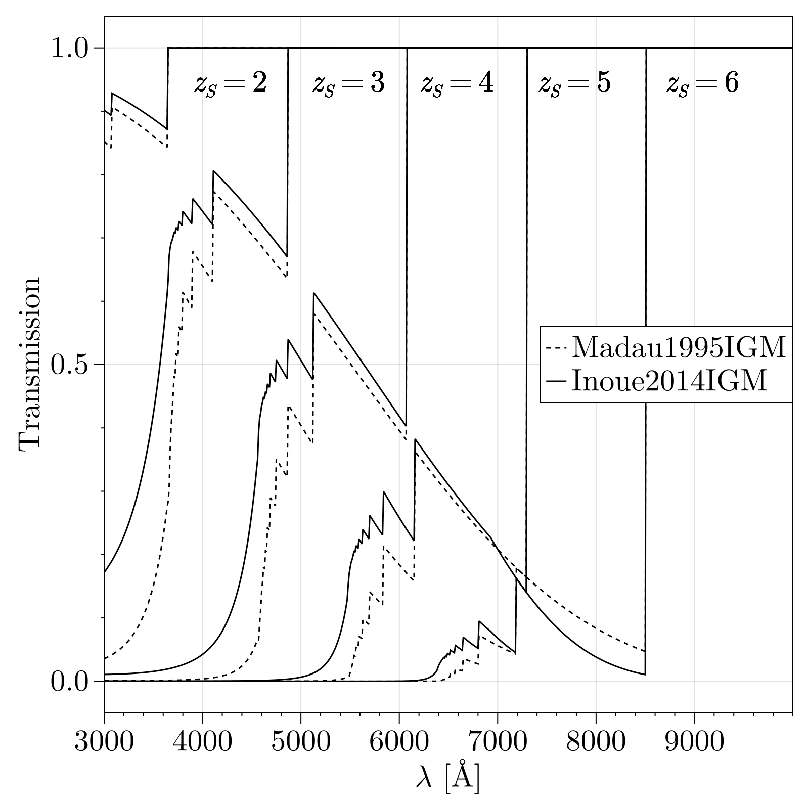

IGM
Here we describe available models for calculating the attenuation due to IGM absorption.
Methods
GalaxyGenerator.IGM.tau — Function
tau(model::IGMAttenuation, z, λ_r)Returns the IGM optical depth for light emitted at rest wavelength λ_r (in Angstroms) at redshift z given the provided IGM transmission model model.
GalaxyGenerator.IGM.transmission — Function
transmission(model::IGMAttenuation, z, λ_r)Returns the IGM transmission for light emitted at rest wavelength λ_r (in Angstroms) at redshift z given the provided IGM transmission model model. Defined as exp(-τ) where τ is the optical depth. Generic implementation is transmission(tau(model, z, λ_r)).
transmission(tau) = exp(-tau)Convert optical depth (tau) to transmission (exp(-tau)).
Models
GalaxyGenerator.IGM.NoIGM — Type
Model for no IGM absorption. transmission(::NoIGM, z, λ_r) always returns one(z), adding no attenuation.
GalaxyGenerator.IGM.Madau1995IGM — Type
Madau1995IGM()Implements the analytic IGM transmission model from Madau (1995). Computing the transmission takes roughly 444 ns.
GalaxyGenerator.IGM.Inoue2014IGM — Type
Inoue2014IGM()Implements the analytic IGM transmission model from Inoue et al. (2014). This model accounts for Lyman-α forest, dampled Lyman-α, Lyman-series, and Lyman-continuum absorption by the intergalactic medium (IGM). Computing the transmission takes roughly 675 ns.
Because this model takes some time to initialize and takes no arguments, we provide a pre-initialized instance as the constant GalaxyGenerator.IGM.Inoue2014.
As [GalaxyGenerator.IGM.Inoue2014IGM] requires some setup to initialize, we also provide a pre-initalized instance,
GalaxyGenerator.IGM.Inoue2014 — Constant
Pre-initialized Inoue2014IGM model instance.
Model Comparison
Below we use Makie.jl to plot a comparison between the different IGM attenuation model. This can be compared to, e.g., Figure 4 of Inoue et al. (2014).
using CairoMakie
using GalaxyGenerator.IGM
models = [Madau1995IGM(), Inoue2014IGM()]
ls = [:dash, :solid]
labels = ["Madau1995IGM", "Inoue2014IGM"]
# λ_o = 0.3:0.01:1.0 # 0.3 to 1.0 μm observer-frame wavelengths
λ_o = 3000:10:10000 # 3k to 10k angstroms; 0.3 to 1.0 μm observer-frame wavelengths
z = [2, 3, 4, 5, 6]
fig = Figure()
ax = Axis(fig[1, 1], xlabel=L"$\lambda$ [Å]", ylabel="Transmission")
for i in eachindex(z)
λ_r = λ_o ./ (1 + z[i])
for j in eachindex(models)
trans = transmission.(models[j], z[i], λ_r)
lines!(ax, λ_o, trans, color = :black, linestyle=ls[j]) # label=labels[j],
text!(ax, 3900, 0.97; text=L"z_S=2", align=(:left, :top), space = :data)
text!(ax, 5100, 0.97; text=L"z_S=3", align=(:left, :top), space = :data)
text!(ax, 6200, 0.97; text=L"z_S=4", align=(:left, :top), space = :data)
text!(ax, 7400, 0.97; text=L"z_S=5", align=(:left, :top), space = :data)
text!(ax, 8700, 0.97; text=L"z_S=6", align=(:left, :top), space = :data)
end
end
ax.xticks = collect(range(3000, 9000; step=1000))
xlims!(ax, minimum(λ_o), maximum(λ_o))
legend_elements = [LineElement(color = :black, linestyle = ls[i], label = labels[i]) for i in eachindex(models)]
legend = Legend(fig[1, 1], legend_elements, labels, orientation = :vertical,
tellheight=false, tellwidth=false, halign=:right, valign=:center)
fig
IGM References
This page cites the following references:
- Inoue, A. K.; Shimizu, I.; Iwata, I. and Tanaka, M. (2014). An updated analytic model for attenuation by the intergalactic medium. MNRAS 442, 1805–1820, arXiv:1402.0677 [astro-ph.CO].